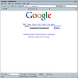

May 2005 Mike Austin
The other day I thought about why I use Google as my primary search engine, and what happened to all the other engines I have used throughout the years. Did they just fade away into nonexistence? No, not all of them. But somehow I became a Googler like everybody else. In this short article, I'll review the top 10 search engines that I use or know about. There are many other search sites of course, but I'll stick to the common ones since this is a short article.
The first time I started using a search engine was around 1996 or so when I worked at Ericsson Components. If I remember correctly, the first ones I used were Infoseek1 and Yahoo!2, and provided basic web searching along with yellow pages and other tools. It seems most search engines today provide searching the web, news stories, images and sounds on their front page search, and will check your query for misspelled words. Many are also portals that provide maps and driving directions, dictionaries, weather information, white and yellow pages and other useful tools. . There are a few that provide unique features such as Ask Jeeves' 'Binoculars', or Google's 'Sets'.
1http://web.archive.org/web/19960512212113/http://www.infoseek.com
2http://web.archive.org/web/19961017235908/http://www2.yahoo.com
The Good
After trying each of the other search engines for a little while, at the end of the day, Google was still my tool of choice. Google works because of it's simple interface, excellent search results, and because it's sponsored ads are off to the side, out of the way of the main results. It also shows sub-page links indented, which helps visualize the results. The only thing I find is lacking is numbered results, and lack of audio searching. I really like engines that number the results – it helps me keep track of where I was when I page back. Google provides an array of other interesting search tools, such as Google Sets, Froogle, Google Linux and more.
Ask Jeeves is also very clean and uncluttered by sponsors. It has the least obtrusive sponsors – they are listed at the bottom of search results. It provides a 'Related topics' column for narrowing results, a nifty 'binoculars' feature to preview a site before clicking a link, and like Google, it shows sub-page links indented. Ask Jeeves provides some interesting tools such as unit conversions, a spell checker, and a movie search tool. I think ask.com would benefit by adding numbered results like some of the other engines.
Yahoo! was the champion of search engines for quite some time. I used to use it as my primary search engine until I got Googled. It is one of the search engines that have numbered results. If you start at search.yahoo.com instead of the main portal page, it has a very simple interface similar to Google, and the results are excellent. Yahoo is a full fledged portal with tools ranging from mail and calendar to online games, from finance and stocks to auctions and classifieds. Yahoo! also provides premium services such as personals, web hosting and real time financial quotes.
I didn't realize how old Dogpile was until I checked the WaybackMachine. It's a very clean and visually pleasing site that uses other search engines such as Google, Yahoo! and Ask Jeeves to get it's content. I like the numbered results, and the ability to filter from which search engine it is showing. However, the first few links are usually sponsored. The search results and many of the features mirror Excite's, so I believe it is just a front – albeit a better looking front. A whois search for Excite reveals that it's owned by Ask Jeeves. So I guess search engines today are really run by a few conglomerates.
MSN Search is fairly new to the search engine arena. The results are good, and it provides several ways in which to search. One option is to search their encyclopedia 'Encarta', which is great for fact-finding; another is with their 'Search Builder', where you can set options for age, popularity and narrow or broaden the accuracy of the results. What I don't like is that sponsors are displayed at the top and also on the side. The result links are huge, so only the first 2 results actually show up in an 800 x 800 window.
The Not-So-Bad
Exite has been around for a long time. But the first 5 results of my search were sponsored links, which left room for zero relevant results in an 800 x 800 window. Excite now supports searching audio and video, but I don't think these features will redeem the sponsors misuse. It does provide a fun tool called SearchSpy, which lists queries that other people are entering. Dogpile also has this feature, because they are a front, or affiliated somehow with Excite and Ask Jeeves.
Like Excite, AltaVista's first five results are sponsors, with the first relevant sponsor just barely seen at the bottom in an 800 x 800 window. Sponsored results look like normal search results, although there is a tiny label at the top. What I like is the ability to search worldwide or just in the US without having to change my preferences each time.
The Ugly
With Lycos, the sponsored results are even worse. The first 10 results are all sponsors when I searched for 'dinosaur', and even paging down once only shows the first 4 relevant results. I like the numbered results and the general design, but please, move those sponsors off to the side.
AOL wants to pop open a new window to display it's search results. Then it uses a bunch of JavaScript to try to do some fancy sub-searches. Finally, the interface is very different from other search engines that have the categories such as Web, Images and News at the top.
Earthlink just provided me with a bunch of sponsored results, huge animated unrelated ads, and no ability to search for images, audio or newsgroups that I can see. If you're using Earthlink, you may want to change your start page to one of the better ones discussed above.
The Elite
For fun, I decided to make a mockup of a search engine that I myself would use as a power searcher. Screen sizes have grown over the years, but because of the problems caused with frames, no search engines provide a paned interface. One problem with the use of frames is bookmarking. When you select 'Bookmark This Page' from your browser, you're bookmarking the whole frame set, not the frame you currently have selected. Another problem is where to put the sponsored links – they won't fit in a small frame.
Since this tool would be designed for power users, the frames issue would not be a problem since you can either drag the link to your bookmarks, or select 'This Frame -> Bookmark' or a similar option. Another approach is to add a bookmark element to html which allows the frameset to specify which page is to be bookmarked. The sponsored links problem can be solved by moving them to the top of the content frame. This actually has a benefit – sponsored ads would be relevant not only to your search results, but to the specific link clicked.
© May 2005 Mike Austin
The Good |
|
|  | |
The Not-So Bad |
|
The Ugly |
|
 |
|
The Elite |
|